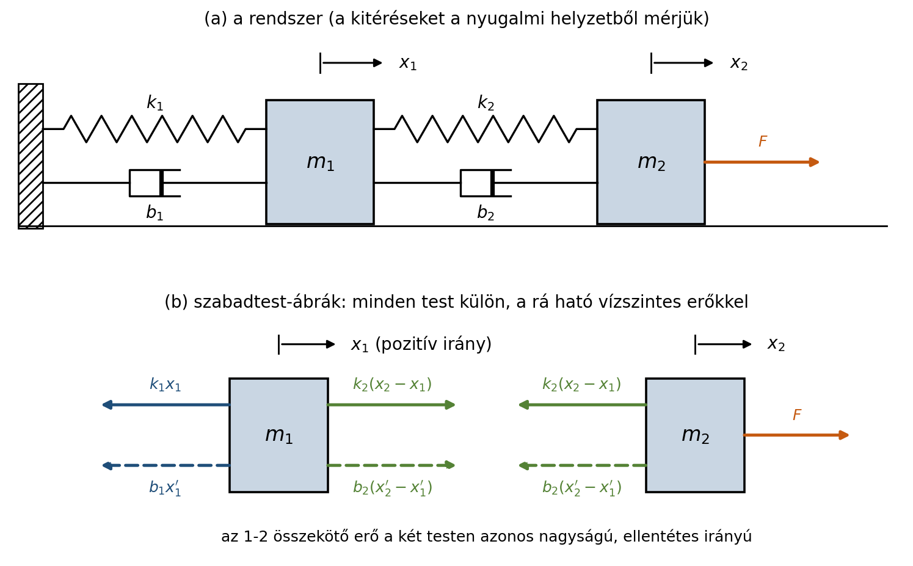
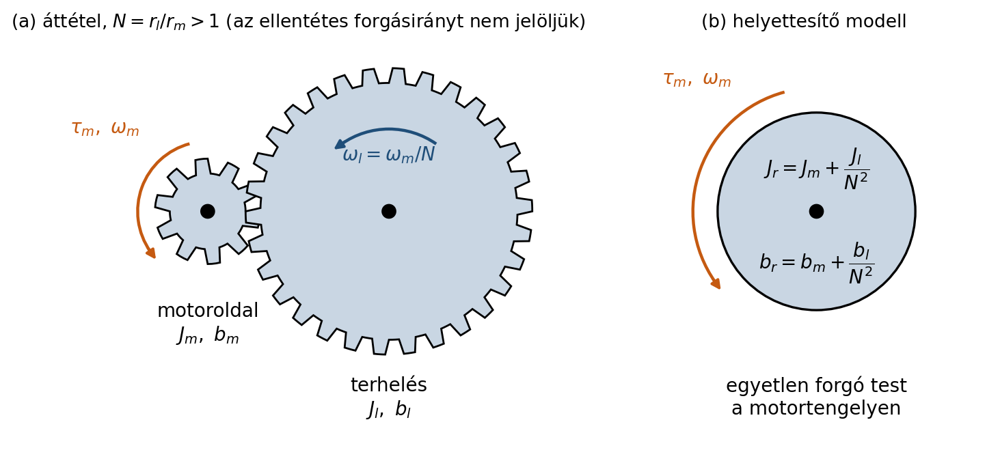

Egy robotkar csuklóját villanymotor forgatja fogaskerék-áttételen
keresztül. A kar néha rezeg, a motor pedig a vártnál lassabban gyorsul.
Mielőtt szabályozót terveznénk, tudnunk kell, milyen
egyenlet írja le a mozgást: mekkora tehetetlenséget „lát” a
motor, mit tesz hozzá a súrlódás, és honnan jön a rezgés. A könyv
sorrendje: előbb modell, aztán szabályozó, végül
ellenőrzés.
A mechanikai modellek három „építőkockából” állnak: a
tömeg a mozgásállapot megváltoztatásának ellenáll, a
rugó a kitéréssel arányosan húz vissza, a
csillapító (damper) a sebességgel arányosan fékez.
Indítsd el az animációt: a tömeget
m-re kihúzzuk és elengedjük.
Tippeld meg: ha a tömeget a négyszeresére növeled,
hogyan változik a periódusidő? És ha a rugót teszed négyszer
merevebbé?
Statikus változat (mint a PDF-ben)
A tömeg–rugó–csillapító mozgásának négy pillanata (felül) és
a kitérés időfüggvénye (alul); m = 1 kg, k_r = 20 N/m, b = 1
N·s/m
A rugó és a tömeg között energia vándorol oda-vissza (helyzeti ↔︎
mozgási), a csillapító pedig lépésenként elvonja belőle. Ezért csökken a
kitérés.
4.1.3 Elemek és forgó
megfelelőik
Definíció. Az ideális lineáris
elemek egyenletei (az erő a testre hat):
elem
transzláció (egyenes vonalú)
rotáció (forgás)
tehetetlenség
,
[kg]
,
[kg·m²]
rugó
,
[N/m]
,
[N·m/rad]
viszkózus csillapító
,
[N·s/m]
,
[N·m·s/rad]
Itt
a hely (m),
a szögelfordulás (rad),
a rugó megnyúlása,
a csillapító két végének relatív sebessége,
a tehetetlenségi nyomaték (moment of inertia),
itt nyomaték (N·m; ne keverd az időállandóval – a szövegkörnyezet dönt).
A negatív előjel azt jelenti: az elem a megnyúlás, illetve a relatív
mozgás ellen hat.
Mértékegység-ellenőrzés. Egy modell minden tagja
azonos mértékegységű. A newton
,
ezért
,
és
egyaránt N. Hasznos következmény:
mértékegysége
(körfrekvencia),
és
mértékegysége s (idő). Ha egy képletben ez nem jön ki, a levezetés
hibás.
Három gyors józansági próba minden felírt modellre,
még szimuláció előtt: (1) statika: nulla gyorsulás és sebesség
mellett a modell a józan ész szerinti egyensúlyt adja-e
()?
(2) határeset:
esetén a tömeg szabadon, csak a súrlódással fékezve mozog-e; nagyon nagy
-nél
lassan kúszik-e? (3) energia: gerjesztés nélkül a mechanikai
energia
csak csökkenhet. Deriválva és a mozgásegyenletet behelyettesítve
adódik, tehát az energiát egyedül a csillapító veszi el. Ha a szimulált
energia gerjesztés nélkül nő, a modellben vagy a numerikában hiba
van.
4.1.4 A szabadtest-ábra
módszere
A hibák többsége előjelhiba. Ez az öt lépés kivédi őket:
Jelöld ki minden test koordinátáját és a pozitív
irányt; a nullpont legyen a nyugalmi helyzet.
Válaszd le a testet a környezetéről.
Rajzold be a rá ható erőket nyílként, a
feltételezett pozitív elmozdulás esetén fellépő irányban (a kihúzott
rugó visszahúz).
Írd fel Newtont: $m x’’ = $ a pozitív irányú erők összege mínusz a
negatív irányúaké.
Ellenőrizd: mindent a bal oldalra rendezve a saját
koordináta
(,
)
együtthatói pozitívak.
Egy testnél: kitérésnél a rugó
,
mozgásnál a csillapító
erővel hat visszafelé, a külső erő
előre, tehát
Ez a rendezett alak minden pozitív paraméterre stabil (a bal oldali
együtthatók mind pozitívak).
4.1.4.1 Függőleges rugó: hova tűnik
a gravitáció?
Függessz fel egy testet függőleges rugóra, a lefelé mutató
koordinátával; a feszítetlen rugónál
.
Newton szerint
Az egyensúlyi helyzet
,
nyugalom mellett:
,
azaz a rugó
-rel
megnyúlik. Vezessük be az
eltérést. Ekkor
,
és
,
így az
tag kiesik:
A gravitáció csak lineáris rugónál tűnik el ilyen
tisztán. Az ingánál vagy a drónnál nem: ott a súly a modellben marad,
illetve a beavatkozó jelben kell kompenzálni (lásd Előrecsatolás és kaszkádszabályozás).
Egy motor és a rugalmas tengellyel hozzákötött terhelés, vagy egy
autó karosszériája és kereke két (vagy több) tömegből áll. Minden tömeg
külön koordinátát és külön egyenletet kap.

Kéttömeges rendszer (a) és a két test szabadtest-ábrája
(b)
A középső rugó megnyúlása
.
Ha pozitív, a rugó az 1-es testet előre
(),
a 2-es testet hátra húzza – ugyanakkora erővel
(hatás–ellenhatás). A csillapítóra ugyanez a relatív sebességgel.
Tehát
Mátrixalakban,
:
A szimmetrikus mátrixok jó ellenőrzést adnak: egy rugó által
összekötött testek egyenleteiben a kereszttagok együtthatója azonos. A
rendszer állapota négy szám
(),
tehát negyedrendű.
Sajátmódusok. Csillapítás és erő nélkül keressünk
olyan mozgást, amelyben mindkét test ugyanazzal a frekvenciával leng:
.
Behelyettesítve
adódik, ahol
a tömegmátrix és
a merevségmátrix. Nem nulla
csak akkor van, ha
A két gyök a két rezonáns körfrekvencia; a hozzájuk
tartozó
a módusalak: megmutatja, milyen arányban és milyen
irányban mozog a két test.
Statikus változat (mint a PDF-ben)
A két sajátmódus és egy vegyes kezdőállapot (m = 1 kg, k =
100 N/m, csillapítás nélkül)
Tetszőleges kezdőállapot a két módus összege
(szuperpozíció), ezért látunk az alsó panelen szabálytalannak tűnő
mozgást. Egy szabályozónak a gyorsabb, ellentétes fázisú módussal
különösen óvatosan kell bánnia.
4.1.5.1 Forgó példa: rugalmas
tengely, rögzítés nélkül
Kösd a motor forgórészét
()
egy rugalmas tengellyel
(
torziós merevség,
belső csillapítás) a terheléshez
(),
és hajtsd meg
nyomatékkal. A szabadtest-ábra a transzlációs eset forgó megfelelője, de
nincs „fal”:
Az első egyenletet
-mel,
a másodikat
-lel
osztva és kivonva a csavarodásra,
-re
egyetlen másodrendű egyenlet marad:
A csavarodás rezonanciafrekvenciája tehát
.
Például
,
kg·m² és
N·m/rad esetén
rad/s. A másik módus a „merev test” mozgás: a két korong együtt forog,
semmi sem húzza vissza
(),
a szög állandó nyomatékra korlátlanul nő. Ha a szabályozó gyorsabb akar
lenni, mint a rezonancia, a rugalmasságot nem hanyagolhatja el; ha
sokkal lassabb, a merev modell
()
elég.
4.1.6 Fogaskerék-áttétel és
redukált tehetetlenség
A motor gyors és kis nyomatékú, a terhelés lassú és nehéz; közöttük
áttétel van. Az ideális (játék és veszteség nélküli)
áttételben a sebességáttétel
,
ahol
a fogaskerék sugara;
lassító hajtás. A fogak érintkezési pontjában a két kerék ugyanakkora
erőt ad át, ezért a terhelőoldali nyomaték
-szeres:
ha a motoroldali kerék
nyomatékot ad le, a terhelés
-et
kap. (A teljesítmény megmarad:
.)

Fogaskerék-áttétel (a) és a motortengelyre redukált
helyettesítő forgó test (b)
A két oldal egyenlete, ahol
a motor nyomatéka,
a terhelésen ható zavaró (ellen)nyomaték:
A második egyenletből
;
behelyettesítésével
Ezt az első egyenletbe írva:
Tétel. A motortengelyről nézve a terhelés
tehetetlensége és viszkózus csillapítása
-szeres,
a terhelő nyomaték
-szeres.
Az
oka az energiából is látszik:
.
Nagy áttételnél a terhelés változásai alig érződnek a motoron – a hajtás
„robusztus” –, de a motor saját forgórésze válik a gyorsulás
korlátjává.
1. Függőleges rugó.
kg,
N/m,
N·s/m. A statikus megnyúlás
m (24,5 mm). Az eltérés egyenlete
,
a karakterisztikus egyenlet
,
a gyökök
:
kb.
s periódusidejű lengés,
s időállandójú burkolóval.
2. Két tömeg.
kg,
N/m:
Másodfokú egyenlet
-re:
.
Tehát
rad/s és
rad/s. A módusalak az első sorból:
,
azaz
(együtt) és
(ellentétesen).
3. Áttétel.
kg·m²,
N·m·s, a terhelés
kg·m²,
N·m·s,
:
Az ötvenszer nagyobb terhelés csak 50%-kal növeli a motor által
látott tehetetlenséget. A (villamos rész nélküli) mechanikai időállandó
s, terhelés nélkül
s volt.
4.1.8 Kód
Függőleges rugó: a gravitációt tartalmazó modellt a feszítetlen
helyzetből indítjuk, és összevetjük az eltérésmodellel. A
controlkit.sim.simulate RK4-et használ.
import numpy as npfrom controlkit import simm, b, k, g =0.5, 2.0, 200.0, 9.81t = np.linspace(0, 3, 3001)with_g = sim.simulate(lambda tt, x, u: np.array([x[1], g - (k * x[0] + b * x[1]) / m]), [0.0, 0.0], t)[:, 0] # z - z0 (lefelé pozitív)ze = m * g / kdev = sim.simulate(lambda tt, x, u: np.array([x[1], -(k * x[0] + b * x[1]) / m]), [-ze, 0.0], t)[:, 0] # y = z - z_eprint(f"statikus megnyúlás: {1000* ze:.2f} mm, gyökök: {np.round(np.roots([m, b, k]), 2)}")print(f"megnyúlás 3 s múlva: {1000* with_g[-1]:.2f} mm, max eltérés a két modell között: "f"{np.max(np.abs(with_g - ze - dev)):.1e} m")
statikus megnyúlás: 24.53 mm, gyökök: [-2.+19.9j -2.-19.9j]
megnyúlás 3 s múlva: 24.59 mm, max eltérés a két modell között: 3.3e-17 m
A kéttömeges rendszer módusai sajátérték-feladat. Egyenlő, egységnyi
tömegeknél
,
tehát
a
sajátértéke; a csillapított pólusok a
-es
állapotmátrix sajátértékei.
A gyorsabb módus jóval gyorsabban cseng le
(
szemben
-tel).
Itt a csillapítómátrix a merevségmátrix többszöröse
(
s), ezért a lecsengés valós része
:
a nagy relatív sebességű, gyors módus hal el előbb. Végül az áttétel:
állandó
N·m motornyomaték mellett az állandósult sebesség
.
J_r = 0.0150 kg·m², b_r = 0.1020 N·m·s, J_r/b_r = 0.147 s
motor 2 s múlva: 0.9804 rad/s, terhelés: 0.0980 rad/s
4.1.9 Próbáld ki
Tömeg és merevség (tömeg–rugó animáció): nyomd meg
a „nehezebb” gombot. Az állapotsorban a gyökök
-ről
-re
változnak: a periódusidő kb. kétszeres, a lecsengés négyszer lassabb. A
„merevebb” gombnál a képzetes rész
-ra
nő, a valós rész nem változik.
Erőugrás: válaszd az „erőugrás” gerjesztést, és
állítsd
-t.
A gyökök
és
(nincs lengés), a test a
m végállapotba kúszik; a rugóerő a végén pontosan kiegyensúlyozza
-et.
Módusok (kéttömeges animáció): az „1. módus alakja”
kezdőállapotnál az
végig állandó, a 2. módusnál
.
A „csak m1 kitérítve” esetben az arány folyton változik.
A gyors módus eltűnik: ugyanebben állítsd
-et.
Néhány másodperc után az arány 1,62 körülire áll be (a nullátmenetek
környékét kivéve): a gyors módus lecsengett, a lassú maradt.
4.1.10 Tipikus hibák
Tünet: a szimulált rendszer csillapítás nélkül is
„felrobban”. Ok: előjelhiba a rugótagban
(
a jobb oldalon). Javítás: a bal oldalra rendezett
egyenletben a saját koordináta együtthatói legyenek pozitívak.
Tünet: a két tömeg egyenletében a csatoló erő
mindkét helyen azonos előjelű. Ok: a hatás–ellenhatás
elmaradt. Javítás: szabadtest-ábra testenként; a
kereszttagokból szimmetrikus mátrixnak kell kijönnie.
Tünet: a függőleges rendszer a gravitáció miatt
kétszer „számolja” a súlyt. Ok: az eltérésváltozó
egyenletébe is beírtuk
-t.
Javítás: ha
az egyensúlyi helyzettől mért,
nem szerepel.
Tünet: a redukált tehetetlenség
-nel
számolva a motor sokkal lassabbnak tűnik. Ok: a négyzet
elhagyása. Javítás: az energia-egyenlőségből:
.
Tünet: a modell nagyságrendekkel rossz.
Ok: vegyes mértékegységek (mm és N/m, fordulat/perc és
rad/s). Javítás: számolj SI-ben, és ellenőrizd a tagok
dimenzióját.
4.1.11 Önellenőrzés
Mi a rugó és a csillapító egyenletében a
jelentése?
Miért esik ki a gravitáció a függőleges rugó egyensúly körüli
modelljéből?
Hány elsőrendű egyenlettel írható le egy háromtömeges lánc?
Mekkora tehetetlenséget lát a motor
áttételnél, ha
kg·m²?
Melyik módusban nagyobb a középső rugó megnyúlása?
4.1.12 Feladatok
(A) Egy
kg test
N/m függőleges rugón lóg. Mekkora a statikus megnyúlás és a
csillapítatlan körfrekvencia?
(A) Dimenzióanalízissel döntsd el:
vagy
körfrekvencia?
(B) Két rugó
(
és
N/m) egyszer párhuzamosan, egyszer sorosan köti a testet a falhoz.
Mekkora az eredő merevség?
(B) Negyedautó-modell:
karosszéria,
kerék; közöttük
rugó és
csillapító, a kerék és az út között
gumimerevség; az útprofil magassága
,
a koordináták
,
(felfelé, az egyensúlytól). Írd fel az egyenleteket.
(C) Adott
motornyomaték,
motortehetetlenség és
terhelés, súrlódás és zavar nélkül. Milyen
adja a terhelés legnagyobb gyorsulását? Számold ki a 3.
számpélda adataival.
(C, programozás) A kéttömeges rendszerre
(
N·s/m) ugrásszerűen
N hat a második testen. Számold ki papíron a statikus végállapotot, és
igazold szimulációval.
4.1.13 Rövid összefoglaló
A mechanikai modell Newton törvényéből, testenkénti
szabadtest-ábrával épül fel: a rugó a megnyúlással, a csillapító a
relatív sebességgel arányos ellenerőt ad; a forgó rendszerben
helyett
szerepel. Egyensúlyi helyzettől mért koordinátával a gravitáció a
lineáris rugónál kiesik. Kéttömeges rendszernek két rezonáns módusa van,
saját frekvenciával és alakkal. Továbbvitt eredmények:
a tömeg–rugó–csillapító modellje
;
az
áttételen keresztül a motortengelyre redukált jellemzők
,
,
a terhelő nyomaték
.
4.1.14 Megoldások
4.1.14.1 Válaszok az önellenőrző
kérdésekre
A két végpont különbségét: a rugónál az
elmozdulások (megnyúlás), a csillapítónál a sebességek különbségét.
Mert a rugó egyensúlyi megnyúlásából eredő többleterő pontosan
,
és lineáris rugónál az eltéréshez tartozó erő ettől függetlenül
hozzáadódik.
Három másodrendű, azaz hat elsőrendű egyenlettel.
A terhelésből
kg·m²-et, a motor saját tehetetlensége ehhez adódik.
A másodikban: ott a testek ellentétesen mozognak,
a kitérésekhez képest nagy.
4.1.14.2 A feladatok
megoldásai
m (39,2 mm);
rad/s.
:
,
a gyöke
.
Tehát
;
a másik periódusidő-jellegű mennyiség (s).
Párhuzamos: azonos megnyúlás, az erők adódnak:
N/m. Soros: azonos erő, a megnyúlások adódnak:
N/m.
és
.
,
a terhelés
.
A deriváltat nullává téve
,
így
.
Ekkor a redukált terhelés éppen a motoréval egyenlő
(„tehetetlenség-illesztés”).
Állandósult állapotban minden derivált nulla: az 1. testen
,
a 2. testen
.
Tehát
m,
m.